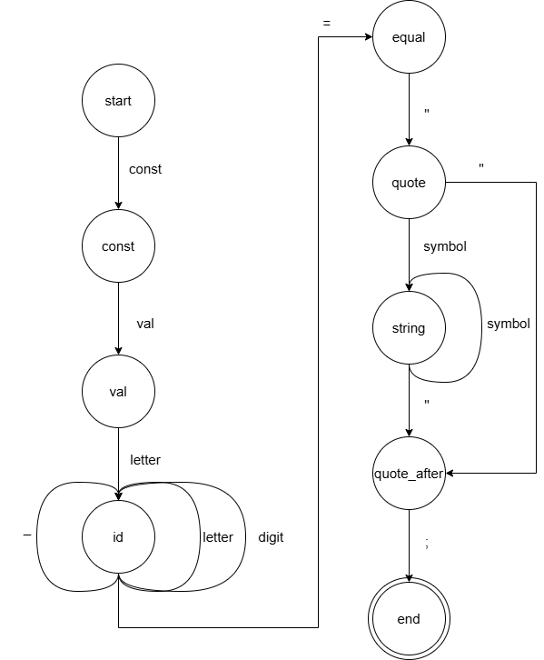

Since the grammar is regular, the syntax analysis is performed using the step-by-step transition method over the Finite State Machine (FSM) graph corresponding to the G[Start] grammar.
Each state of the automaton corresponds to a specific processing stage of the input string, while transitions are determined by terminal symbols.
